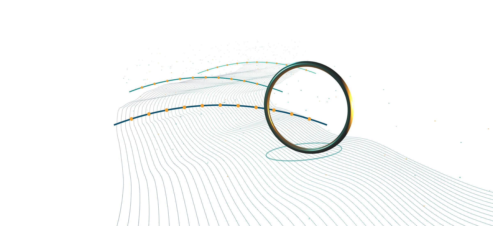

1 実施内容｜1-1 本提案の位置づけとコンセプト1
CONCEPT
那珂川を、
アジアを代表する文化景観に。
アジアを代表する文化景観に。
渋谷のスクランブル交差点や道頓堀のように、人が訪れるエリアには、人の営みと遊び心が積み重なって生まれた「文化景観」がある。那珂川は単なる集客の場ではなく、多様な作り手が関わり、新たな文化や活動が生まれる舞台。豊かな水辺と都市機能の上に、アジアを代表する景観を育てていく。
THEMEFUKUOKA ON THE RIVER FESTIVAL
TARGETメイン国内外の観光客（アジアからの訪日客・国内旅行者、20〜40代）
サブ都市圏の来街者（天神・中洲で夜を過ごす20〜40代）
サブ都市圏の来街者（天神・中洲で夜を過ごす20〜40代）
本事業における文脈の整理

01 歴史的背景
水辺に賑わいの記憶
黒田藩の時代、芝居や相撲が呼び込まれた

02 市の方針と計画
川に開かれたまちへ
リバーフロントNEXT、清流公園と護岸の整備

03 今回の公募
作り手が集う舞台へ
音楽・アートで多様な作り手の参加を促す

04 これからの展望
面白いことが生まれる川
期待と信頼をエリアのブランドに
コンセプトの構造
実現のための2つの手法
METHOD 01
街そのものを演出する
効果景観という文化資産を持ち帰ってもらう
課題演出だけでは、まず見てもらえない
METHOD 02
人を呼ぶ力を招き入れる
効果アーティストの話題性による大きな集客
課題予算が大きく、景観に回らない
→ ①②を組み合わせ、景観と集客を同時に成立させる
VISION
今回のイベントを起点として、川と共に文化が育ち、福岡ならではの景観が生まれ、世界へ波及していくこと
参考事例：ブレゲンツ音楽祭（オーストリア）
常設でなくても、景観になれる
常設でなくても、景観になれる